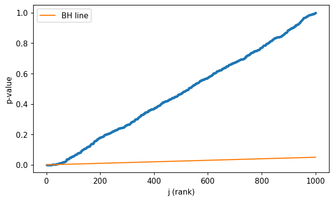

This notebook runs on Colab as-is. The badge link above and the GITHUB_RAW line in the setup cell already point to this repository, so everything installs and loads automatically.
Chapter 13 — Multiple Testing¶
Lab: Bonferroni, Holm, Benjamini–Hochberg, permutation tests¶
Course: Quantitative Research Methods
Instructor: Prof. Dr. Christoph Weisser
Source: James, Witten, Hastie, Tibshirani & Taylor (2023), An Introduction to Statistical Learning, with Applications in Python, Springer. Companion code at statlearning.com.
Goal. Run a multiple-testing simulation; compare FWER- and FDR-controlling procedures; build a permutation \(p\)-value.
Setup¶
Run this cell once. The ISLP package can be installed with pip install ISLP. As an alternative, the same data sets are available as CSVs in the workspace’s ALL CSV FILES - 2nd Edition folder.
Google Colab: this notebook also runs on Colab out of the box — the setup cell below installs any missing packages and downloads the data automatically.
# --- Setup: runs locally AND on Google Colab --------------------------------
# Silence only the spurious 'encountered in matmul' RuntimeWarnings that the macOS
# Accelerate BLAS emits; real warnings (deprecations, model caveats) stay visible.
import warnings
warnings.filterwarnings('ignore', message='.*encountered in matmul', category=RuntimeWarning)
import importlib.util, os, subprocess, sys
IN_COLAB = 'google.colab' in sys.modules
def _ensure(pkg, import_name=None):
"""pip-install pkg (quietly) if its import is missing."""
if importlib.util.find_spec(import_name or pkg) is None:
subprocess.run([sys.executable, '-m', 'pip', 'install', '-q', pkg], check=False)
if IN_COLAB: # Colab ships numpy/pandas/sklearn/statsmodels; add course extras
for _pkg, _imp in [('ISLP', 'ISLP')]:
_ensure(_pkg, _imp)
import numpy as np
import pandas as pd
import matplotlib.pyplot as plt
rng = np.random.default_rng(2024)
plt.rcParams['figure.dpi'] = 110
try:
from ISLP import load_data
HAVE_ISLP = True
except ImportError:
HAVE_ISLP = False
print('ISLP not installed; using CSV / URL fallbacks.')
# Local CSV location (repo layout first, then legacy paths, then a data/ cache).
_CANDIDATES = ['../ALL CSV FILES - 2nd Edition',
'ALL CSV FILES - 2nd Edition',
'../../ALL CSV FILES - 2nd Edition', 'data']
CSV = next((p for p in _CANDIDATES if os.path.isdir(p)), 'data')
# GITHUB_RAW lets a fresh Colab runtime fetch any
# CSV that is neither in ISLP nor already local (spaces in the folder -> %20).
GITHUB_RAW = ('https://raw.githubusercontent.com/ChrisW09/Quantitative-Research-Methods/main/'
'ALL%20CSV%20FILES%20-%202nd%20Edition')
# The four datasets NOT in the ISLP package -> load from the book's official
# site so the notebook works on a fresh Colab even before the repo is published.
KNOWN_URLS = {
'Advertising': 'https://www.statlearning.com/s/Advertising.csv',
'Heart': 'https://www.statlearning.com/s/Heart.csv',
'Income1': 'https://www.statlearning.com/s/Income1.csv',
'Income2': 'https://www.statlearning.com/s/Income2.csv',
}
def load(name, **read_csv_kwargs):
"""Load a course dataset. Order: ISLP package -> R datasets -> local CSV
-> official book URL -> your GitHub repo. Works locally and on Colab."""
if HAVE_ISLP:
try:
return load_data(name)
except Exception:
pass
if name == 'USArrests': # classic R dataset, not in ISLP
try:
import statsmodels.api as sm
return sm.datasets.get_rdataset('USArrests', 'datasets').data
except Exception:
pass
path = f'{CSV}/{name}.csv'
if os.path.exists(path): # running from the repo (local)
return pd.read_csv(path, **read_csv_kwargs)
remotes = ([KNOWN_URLS[name]] if name in KNOWN_URLS else []) + [f'{GITHUB_RAW}/{name}.csv']
for url in remotes: # fresh Colab: stream over https
try:
return pd.read_csv(url, **read_csv_kwargs)
except Exception:
continue
raise FileNotFoundError(
f"Could not load {name!r}. Put the CSV in '{CSV}/' or check your connection for the GITHUB_RAW fallback.")
1. Simulation: \(m = 1000\) tests, \(5\,\%\) true alternatives¶
from scipy.stats import ttest_1samp
from statsmodels.stats.multitest import multipletests
m, n_true, n = 1000, 50, 30
X = rng.standard_normal(size=(n, m))
true_mean = np.zeros(m)
true_mean[:n_true] = 0.6
X = X + true_mean
p = np.array([ttest_1samp(X[:, j], 0).pvalue for j in range(m)])
print('first 10 p-values:', np.round(p[:10], 3))
first 10 p-values: [0.432 0.003 0.019 0. 0.106 0. 0. 0.086 0.067 0.001]
2. Compare procedures¶
for method in ['bonferroni', 'holm', 'fdr_bh']:
rej, p_corr, *_ = multipletests(p, alpha=0.05, method=method)
tp = rej[:n_true].sum(); fp = rej[n_true:].sum()
fdr = fp / max(rej.sum(), 1)
print(f'{method:11s} rejected={rej.sum():3d} TP={tp:3d} FP={fp:3d} realised FDP={fdr:.3f}')
bonferroni rejected= 7 TP= 7 FP= 0 realised FDP=0.000
holm rejected= 7 TP= 7 FP= 0 realised FDP=0.000
fdr_bh rejected= 23 TP= 20 FP= 3 realised FDP=0.130
3. Visualise the Benjamini-Hochberg line¶
p_sorted = np.sort(p)
j = np.arange(1, m + 1)
q = 0.05
fig, ax = plt.subplots(figsize=(7, 4))
ax.scatter(j, p_sorted, s=4)
ax.plot(j, j * q / m, color='C1', label='BH line')
ax.set(xlabel='j (rank)', ylabel='p-value'); ax.legend()
plt.show()

4. Permutation test¶
def perm_pvalue(x, B=2000, rng=rng):
obs = np.abs(x.mean())
n = len(x)
null = np.array([
np.abs((rng.choice([-1, 1], size=n) * x).mean()) for _ in range(B)
])
return (null >= obs).mean()
z = rng.standard_normal(40) + 0.5
print('permutation p-value:', perm_pvalue(z))
from scipy.stats import ttest_1samp
print('parametric p-value:', ttest_1samp(z, 0).pvalue)
permutation p-value: 0.0065
parametric p-value: 0.0076141250910252
Lecture exercises — worked Python solutions¶
These are the [Python]-tagged exercises from the lecture slides, solved step by step. Run each cell and compare with the slide solutions.
Extended Exercise 13.3 — Simulating FDR and power [Python]¶
Simulate m=1000 one-sided z-tests, m1=100 with a true effect (mean shift mu=3). Over ~2000 repeats, apply Benjamini–Hochberg at q=0.10 and Bonferroni at alpha=0.05, and estimate the realised FDR (V/R) and power (S/m1).
import numpy as np # arrays and random numbers
from scipy import stats # normal cdf for p-values
rng = np.random.default_rng(0) # seeded generator: reproducible
m, m1, mu = 1000, 100, 3.0 # 100 true effects, mean shift mu
q, alpha = 0.10, 0.05 # FDR target q, FWER target alpha
truth = np.arange(m) < m1 # first m1 tests are non-null
def bh_reject(p, q): # Benjamini-Hochberg step-up procedure
order = np.argsort(p); ps = p[order] # sort p-values ascending
thr = (np.arange(1, m + 1) / m) * q # BH line: (j/m) * q
hit = np.where(ps <= thr)[0] # ranks below the line
rej = np.zeros(m, bool) # start: reject nothing
if len(hit):
rej[order[:hit.max() + 1]] = True # reject up to the largest hit
return rej
def simulate(method, reps=2000): # average FDR / power over reps
fdr = pw = 0.0
for _ in range(reps):
z = rng.normal(0, 1, m) # null z-scores
z[:m1] = rng.normal(mu, 1, m1) # inject the true effects
p = 1 - stats.norm.cdf(z) # one-sided p-values
rej = bh_reject(p, q) if method == "bh" else (p <= alpha / m)
V = (rej & ~truth).sum() # false rejections
S = (rej & truth).sum() # true rejections
R = rej.sum() # total rejections
fdr += V / max(R, 1); pw += S / m1 # realised FDP and power
return fdr / reps, pw / reps
for meth in ["bh", "bonferroni"]:
f, pw = simulate(meth) # pw, not p: p holds the earlier p-values
print("%-11s FDR=%.3f power=%.3f" % (meth, f, pw))
print("BH theoretical bound q*m0/m =", q * (m - m1) / m)
# Expected: bh FDR=0.090 power=0.723 ; bonferroni FDR=0.002 power=0.186 ; bound=0.09
bh FDR=0.090 power=0.723
bonferroni FDR=0.002 power=0.186
BH theoretical bound q*m0/m = 0.09
Reading the output. BH holds the realised FDR right at its bound q·m0/m = 0.09 while recovering ~72% of the true effects. Bonferroni is far stricter (FDR ≈ 0.002) but pays for it in power (~19%): controlling the probability of any false positive is much more conservative than controlling the fraction of them.
5. Exercises¶
Increase \(m\) to 10 000 and re-run. How does power change?
Replace
0.6with0.3(smaller effect) and observe how FDR and power respond.Implement Storey’s \(\hat\pi_0\) estimator and the resulting \(q\)-values.
Use a permutation test to compare two-sample means; compare with the parametric \(t\)-test under non-Gaussian data.